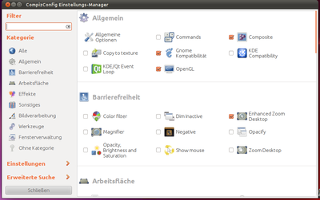
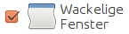
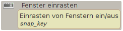

Compiz CCSM
Achtung!
Falsch gewählte Einstellung können im schlechtesten Fall dazu führen, dass Compiz nicht mehr korrekt startet. Daher sollte hier immer mit Bedacht vorgegangen werden.
Dieser Artikel wurde für die folgenden Ubuntu-Versionen getestet:
Ubuntu 16.04 Xenial Xerus
Ubuntu 14.04 Trusty Tahr
Zum Verständnis dieses Artikels sind folgende Seiten hilfreich:
Der Einstellungs-Manager "CompizConfig (abgeleitet aus der Paketbezeichnung nachfolgend "CCSM" abgekürzt) bietet umfangreiche Möglichkeiten, das Verhalten auf dem Bildschirm, das Aussehen diverser Komponenten sowie die Eingriffe durch die Tastatur und die Maus zu konfigurieren. Der CCSM ist ein Werkzeug für Benutzer, die schon gute Kenntnisse von Ubuntu und den Prinzipien der internen Konfiguration besitzen - also ein Werkzeug für Experten!
Diese Beschreibung orientiert sich am CCSM von Precise Pangolin (12.04 LTS). Basis für den Einsatz ist immer die Grundinstallation von Compiz als alternativer Fenstermanager. Ab Ubuntu 11.04 wird Compiz mit dem "Ubuntu-Unity-Plugin" als primärer Fenstermanager eingesetzt, so dass alle Voraussetzungen bereits erfüllt sind.
Versionen des CCSM¶
Die Unterschiede der einzelnen Versionen, insbesondere die Abweichung durch Unity, wurden an den Stellen gekennzeichnet, wo diese Unterschiede auftreten. Dieses wurde wegen der Doppelfunktion zwischen "Ubuntu" ("Ubuntu-Classic") einerseits und Unity andererseits erforderlich. Viele Einstellungen sind ab Ubuntu 11.04 nicht sinnvoll bzw. sogar gesperrt, auch wenn die Optionen als solche (mit Icons bzw. Text) im CCSM noch vorhanden sind.
CCSM installieren¶
In einer frischen Installation von Ubuntu muss der
compizconfig-settings-manager (universe)
 mit apturl
mit apturl
Paketliste zum Kopieren:
sudo apt-get install compizconfig-settings-manager
sudo aptitude install compizconfig-settings-manager
nachinstalliert [1] werden. Beim ersten Anmelden werden je nach Ubuntu-Version und Hardware bestimmte Voreinstellungen für jeden Benutzer automatisch gesetzt.
CCSM aufrufen¶
Sofern man den entsprechenden Starter noch nicht eingerichtet hat, startet man den installierten CCSM unter Unity durch Drücken der
Super -Taste und Eingabe von compizconfig bzw. ccsm in die Dash-Zeile und schließt das mit der
⏎ -Taste ab.

Vorhandene Plugins und Optionen¶
Welche der Plugins zur Verfügung stehen (siehe auch diese Informationen), eingesetzt und konfiguriert werden können, ist in der Startmaske des CCSM links unten bei
"Einstellungen -> Pluginliste"
zu sehen, nachdem man die Option "Automatische Pluginsortierung" nur zum Betrachten vorübergehend deaktiviert hat.
Bevor man irgend welche Änderungen vornimmt, sollte man sich die aktuelle Startkonfiguration abspeichern. Dazu geht man im CCSM-Startfenster auf die Option links unten
"Einstellungen -> Profil & Backend -> Profil -> Exportieren"
und wählt dann ein passendes Verzeichnis und eine aussagekräftige Bezeichnung aus. Über diese Funktion ist jederzeit ein Zurückholen dieser bzw. auch persönlicher Einstellungen möglich.
CCSM-Datenablage¶
Der CCSM greift auf die Daten der Einstellungen im jeweils aktiven Homeverzeichnis zu. Diese Daten sind wie folgt zu finden:
für "Ubuntu-Classic" unter ~/.gconf/apps/compiz-1
für "Unity 2D" unter ~/.gconf/apps/compiz
für "Ubuntu" (3D) unter ~/.gconf/apps/compizconfig-1
CCSM-Einstellungen¶
Nachdem man den CCSM aufgerufen hat, kann man Einstellungen vornehmen.
Optionen aufsuchen¶
| Allgemein | In der linken Spalte des CCSM befinden sich Options-Gruppen - im rechten Feld werden alle Optionen incl. Aktivierungszustand angezeigt. Klickt man im linken Feld mit der  auf eine dieser Options-Gruppen (siehe Beispiele links), so wird die Anzeige im rechten Feld auf die Anzeige dieser Gruppe reduziert. auf eine dieser Options-Gruppen (siehe Beispiele links), so wird die Anzeige im rechten Feld auf die Anzeige dieser Gruppe reduziert. | |
 | Alle | Durch Klicken mit der auf "Alle" wird wieder auf die volle Übersicht geschaltet. |
|  | In einer Auswahlbox wird die Option als solche mit der aktiviert bzw. deaktiviert. Klickt man mit der auf die Bezeichnung der Option, so wird eine Maske zur Bearbeitung aufgerufen. |
|  | Innerhalb dieser Maske werden (in der Regel) Informationen durch einen "mouse-over"-Effekt über eine der Anzeigen, einen Einstellbereich oder andere Komponenten angezeigt. |
Optionen bearbeiten¶
Die Bearbeitung oder Auswahl einer Option erfolgt auf unterschiedliche Art und Weise. Nähere Einzelheiten zur Benutzung (dem handwerklichen Vorgehen) sind in einem getrennten Artikel beschrieben.
Achtung!
Sollte man nach der Veränderung einer Einstellung in einer Abfragemaske darauf hingewiesen werden, dass noch weitere Plugins betroffen seien (Aktivierung - Deaktivierung), sollte man den Vorgang abbrechen, wenn man sich nicht sicher ist, welche Konsequenzen damit verbunden sind.
CCSM-Deinstallation¶
Sofern man der Meinung ist, dass man dieses spezielle Werkzeug nicht mehr benötigt, kann man es einfach deinstallieren. Die eigentliche Funktion von Compiz, dem Fenstermanager ist davon nicht berührt und bleibt erhalten.
Die Konfigurationsdateien im Homeverzeichnis der Benutzer bleiben erhalten und müssen in den oben beschriebenen Verzeichnissen manuell gelöscht werden.
Problembehebung¶
Änderungen an Einstellungen¶
Es wird empfohlen, nach Änderungen an den Einstellungen im "CompizConfig Einstellungs-Manager" den Benutzer ab- und wieder anzumelden, damit der Desktop neu aufgebaut werden kann. Ansonsten kann es zu Verzerrungen, falscher oder fehlender Darstellung kommen.
Plugins ausgegraut¶
Gelegentlich kommt es vor, dass sich Plugins nicht aktivieren oder deaktivieren lassen, weil die Checkboxen dafür ausgegraut sind. In diesem Fall sollte man unter
"Einstellungen -> Pluginliste"
kontrollieren, ob der Haken für "Automatische Pluginsortierung" aktiviert ist.
Grundeinstellung reparieren¶
Hat man mal die Einstellungen so falsch eingestellt, dass nichts mehr geht und auch keine Sicherungskopie (backup) verfügbar ist, so kann man den Inhalt in den unter Datenablage genannten Verzeichnissen einfach löschen. Falls dieses nicht mehr vom Desktop aus zu machen ist, so wechselt man mit Strg + Alt + F1 bis F6 in eine Virtuelle Konsole und löscht hier die relevanten Dateien.
Danach sollte man sich abmelden, und nach dem erneuten Anmelden werden die Grundeinstellungen wieder geladen.
Links¶
intern¶
Compiz - ein Composite- und Fenstermanager
Plugins - eine Übersicht, wie Compiz aufgebaut ist
CCSM Benutzung - wie die Plugins mit dem CCSM bearbeitet werden
Einstellungen von Compiz speziell für Unity
 - Wiki, Übersicht Compiz
- Wiki, Übersicht Compiz 
- Erstellt mit Inyoka
-
 2004 – 2017 ubuntuusers.de • Einige Rechte vorbehalten
2004 – 2017 ubuntuusers.de • Einige Rechte vorbehalten
Lizenz • Kontakt • Datenschutz • Impressum • Serverstatus -
Serverhousing gespendet von